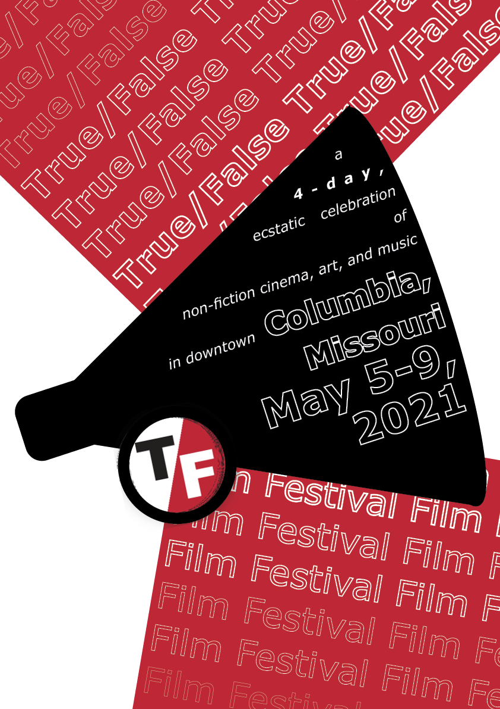

Posters
True/False Film Festival
I used mutliple film related items with the logo to make simple, bold designs. I used the Verdana font in all of them for its clear readability and to blend in with the T/F in the logo. I paid a lot of attention to angling, to keep a cohesive direction. I found using Adobe InDesign a bit restrictive to use, as it has less controls than Adobe Illustrator.
With contrast, I tried to remember more than just colour and shade but also size and amount of detail or lack thereof. I modelled the shape of the text close to the Fibonacci sequence to make the text 'flow' more natural. I lined up the intersects of the film reels to enforce the spiral shape and tried to make their square intersects more centred. I tried adding frames to the reel but felt it overcomplicated the piece as a whole. It would've gotten rid of the variety of visual complexity.
Contrast
Grid
I thought the details of a clapperboard most suited the grid prompt. Given quantitative detail is given in the 'squares' it felt appropriate to put location and dates in them. The slash in the title, the shadow and the 'Film Festival' text to give the sense of movement and sound. The slanted stripes were a little difficult to align perfectly but were well worth it. I put a right slanted outline on the red shadow to feather it into the background a bit but also to keep the dynamism.
I repeated the title above and below a megaphone, the words less clear moving away from it like its getting quieter or less discernible. I extended the red from the logo to make the red rectangles that show the amplification of the megaphone. I was really happy finding a place for the logo in the handle of the megaphone. I planned to align the slant with the rest of the cone but making it perpendicular made for better orientation of the logo and the megaphone.
Repetition

Proximity
I had the most trouble with this one, but I was able to split up the details well with the change in colours. I'm most happy with the inverted on the film reel that makes the slash, also looking like lighting behind the camera. I lined up the connecting sentence of the description paragraphs to not have their proximity throw it off. Conveying that it was a film camera was difficult too, but the shape of the lens, the reel on top and the tripod make it clearer whilst making an interesting shape.